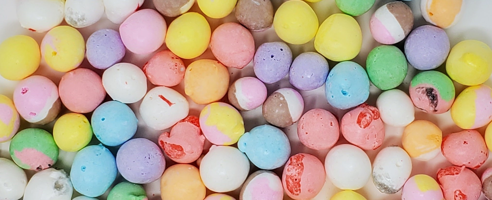

We started our family-owned business in March of 2023 as a means to help me as a 17-year-old save money for college. The vision for the initial business changed multiple times as we figured out where we best fit. We learned that in order to sell online we would have to get a commercial kitchen so instead we started with events and then approached brick-and-mortar stores and locations to sell there. We did pop-up events in local coffee shops and sold on social media. We started in a couple of boutiques and music stores but eventually found our niche. We are now located in six different stores across the Phoenix metropolitan area. We encourage people to shop local and support small businesses.
The all-time fan favorite is the original flavors of Skittles. We also carry wildberry and sour skiddles. The runner-up flavor is the nerdy clusters, these are freeze-dried gummy nerds. It should be gummy candy with a crunch on the inside becomes a very fluffy treat. Be warned, the products are very delicious!
If you have a freeze dryer be sure to check out our recipes below to try to make this product for yourself!
Set machine to "High Temperature Candy Mode". To acheive the perfect crunchy airy texture do not add extra top plastic layers. This will prevent them from overheating. Warm Trays at 150-degrees for 8 min and Freeze Dry at 150-degrees for 3hrs. Remove from machine shortly after cycle is complete before the machine has cooled. This allows the skiddles to maintain their shine.
Note: This recipie can also be used for Sour and Berry SKiddles as well as Sweet Tart Chews! Additional dry time may be needed in more humid climates in order to completely dry the candy.
Set machine to "High Temperature Candy Mode". You should not need to add extra top layers, but if your gummies come out flat this is an indication that they did not warm enough and will need to have the extra plastic layers. Skip warming trays. Freeze Dry at 150-degrees for 10hrs. Remove from machine shortly after cycle is complete before the machine has cooled. This prevents the gummies from becoming sticky.
Note: Additional dry time may be needed in more humid climates in order to completely dry the candy.
Before freeze drying cut 1 taffy into 4 equal peices, do this to all the taffy that you intend to freeze-dry. Be aware that the taffy becomes sticky and can stick together so space appropriately. Set machine to "High Temperature Candy Mode". To acheive the perfect crunchy airy texture do not add extra top plastic layers. This will prevent them from overheating and melting. Skip warming trays and Freeze Dry at 150-degrees for 3hrs. Remove from machine shortly after cycle is complete before the machine has cooled. This allows the taffy to maintain its shine.
Note: Additional dry time may be needed in more humid climates in order to completely dry the candy. If candy is not puffing this means that it is not getting warm enough in the beggining. Adjust recipie and try incrasing or adding time to the warm trays cycle or add the extra plactic on top to increase convection.
Before freeze drying cut 1 taffy into 3 equal peices, do this to all the jolly ranchers that you intend to freeze-dry. Be aware that the taffy becomes sticky and can stick together so space appropriately. Set machine to "High Temperature Candy Mode". To acheive the perfect crunchy airy texture add extra top plastic layers. This will help them become warm enough. Skip warming trays and Freeze Dry at 150-degrees for 4hrs. Remove from machine shortly after cycle is complete before the machine has cooled. This prevents jollys from becoming sticky due to the cold temperature that the machine will settle into after the cycle.
Note: Additional dry time may be needed in more humid climates in order to completely dry the candy. If candy is not puffing this means that it is not getting warm enough in the beggining. Adjust recipie and try incrasing or adding time to the warm trays cycle or add the extra plactic on top to increase convection.